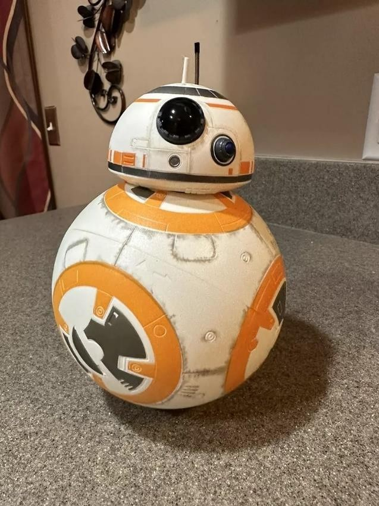
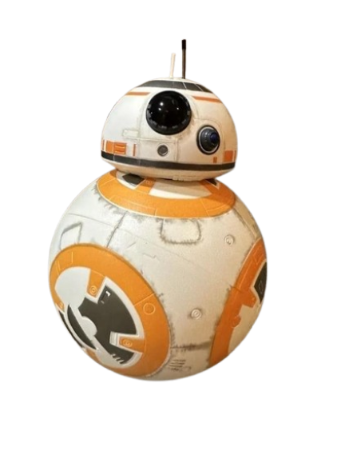
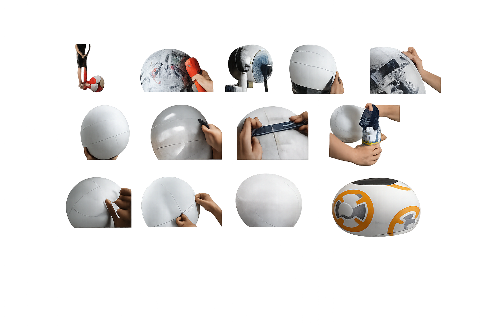
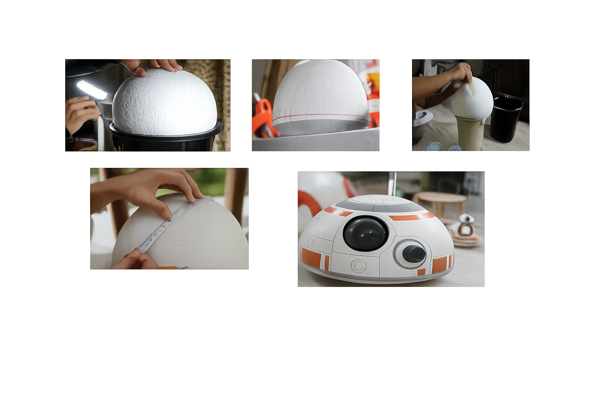
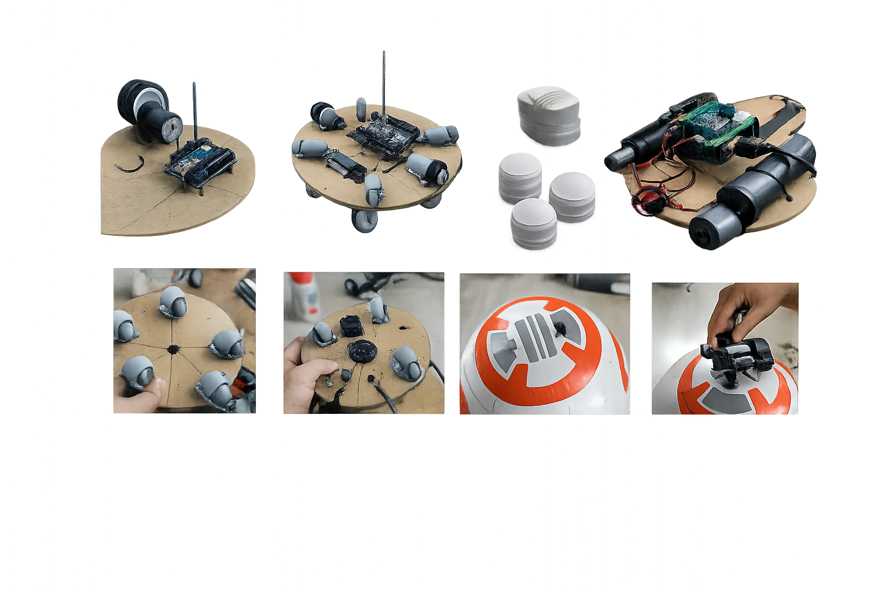
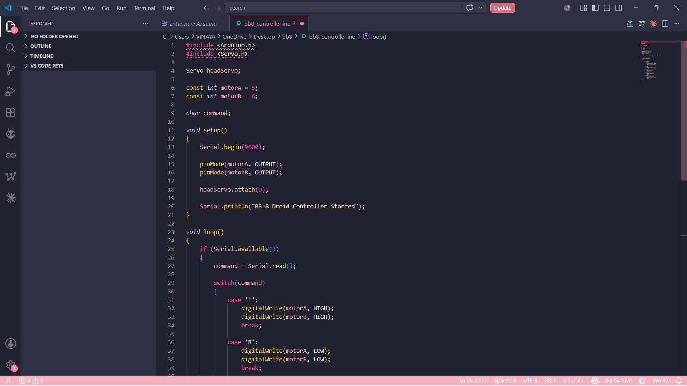

Bluetooth Controlled Robotic System
Inspired by the Star Wars Universe

Project Vision
BB-8 Droid is a Bluetooth-controlled robotic system inspired by
the iconic Star Wars character. The project combines Arduino-based
electronics, wireless communication, motor control, and custom
mechanical design to create a functional robotic replica capable
of movement and smartphone-based interaction.
The goal was to explore practical robotics engineering while
integrating hardware design, embedded programming, and
wireless communication into a single intelligent system.
Technology Stack
Arduino Uno
Embedded C
HC-05 Bluetooth
L293D Motor Driver
Servo Motor
Robotics
IoT Concepts
Wireless Communication
Mechanical Design
Arduino IDE
Final Robot
The completed BB-8 Droid represents the successful integration
of electronics, mechanics and software. Inspired by the original
Star Wars robot, the system demonstrates movement, wireless
control and interactive robotic behavior.

Components & Hardware
The robot was built using Arduino Uno as the primary controller,
an HC-05 Bluetooth module for communication, motor drivers,
servo mechanisms and rechargeable batteries. These components
formed the foundation of the robot's control and movement system.
Circuit Architecture
A dedicated circuit architecture was developed to connect
the Arduino controller with the motor driver, Bluetooth module,
power system and movement mechanisms. The Arduino interprets
incoming Bluetooth commands and converts them into real-time
movement instructions.
Building the Body
The spherical body was constructed using lightweight materials
and multiple reinforcement layers to achieve both strength and
mobility. Surface finishing techniques were applied to create
the recognizable BB-8 appearance while maintaining balance
for movement.

Designing the Head
The head was developed separately and carefully shaped to match
the appearance of the original BB-8 character. Attention was
given to detailing, finishing and structural stability while
keeping the design lightweight.

Electronics Integration
Once the mechanical structure was completed, all electronic
components were integrated into the body. The Arduino controller,
motor systems, Bluetooth module and internal mechanisms were
assembled into a compact robotic platform capable of remote
operation.

Developer View
The software controlling the BB-8 Droid was developed using
Arduino IDE and Embedded C. The code manages Bluetooth
communication, motor control, movement logic and overall
robot behavior.

How It Works
Commands are transmitted from a smartphone application through
Bluetooth to the HC-05 module. The Arduino receives these
instructions and controls the motors through the motor driver
shield. Users can remotely navigate the robot using commands
such as Forward, Backward, Left, Right and Stop.
This interaction creates a simple yet effective wireless robotic
control system.
Key Features
📱 Bluetooth Smartphone Control
⚙ Arduino Based Robotics
🔄 Real-Time Movement Control
🎮 Interactive User Experience
🔋 Battery Powered Mobility
🧠 Embedded System Design
Achievements
Designed and built a BB-8 inspired robotic platform
Integrated wireless Bluetooth communication
Implemented Arduino-based motor control systems
Developed custom body and head construction techniques
Combined electronics, mechanics and software into a unified robot
Applied practical embedded systems and robotics concepts
Certain images displayed on this page are temporary reference visuals
used solely for portfolio presentation purposes. These images help
illustrate the design and construction concepts of the BB-8 Droid
project while original project photographs are being prepared.
The project documentation, implementation details and technical
description presented on this page reflect the actual work carried
out during development. Original project images will replace the
reference visuals in future updates.